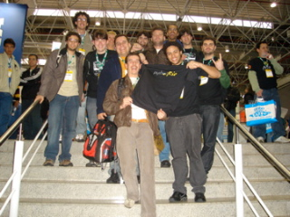
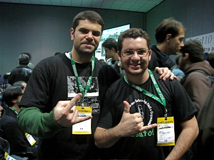
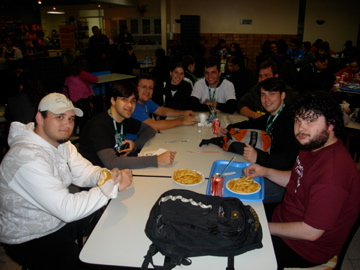
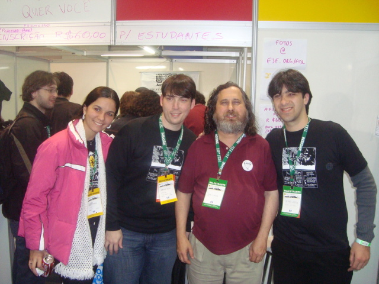

This is an archived post This is an archived post
Previous
Index
Next
Balanço do quarto dia no FISL 10
June 29 2009, 9:14 PM
by PythOnRio
Ainda exaustos da viagem, mas com uma satisfação imensa, gravamos o último podcast com os acontecimentos do quarto e último dia do FISL.
Podcast:
Quarto Dia Da Pythonrio No Fisl 10
by Henrique Bastos E Caike Souza
Listen to this
Fotos:




1709 views and 0 responses